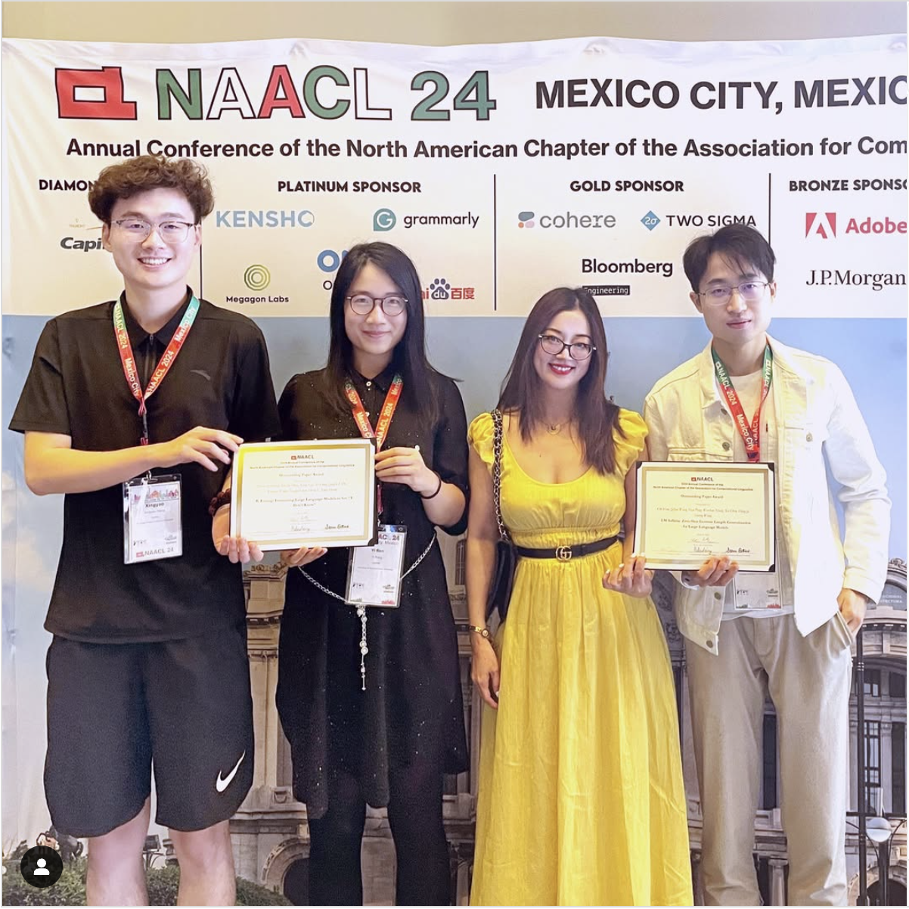

More about me
- My English name is May; it is inspired from the Chinese reference of sister growing up as the youngest in a family of four. Nowadays, it also signifies the belief that anything/everything is possible if we put the heart and dedication to it.
- One of my core belief in life is 善因善果 - do *not* to others what you do not want to be done to you.
- For exercise, I love jogging, hiking, and martial arts... Here's a video of me practicing kungfu in case you're curious.
- I enjoy photography and filming in my spare time.
A few special moments below: NAACL'24 paper awards ceremony (left), and Microsoft 2018 intern (right).
